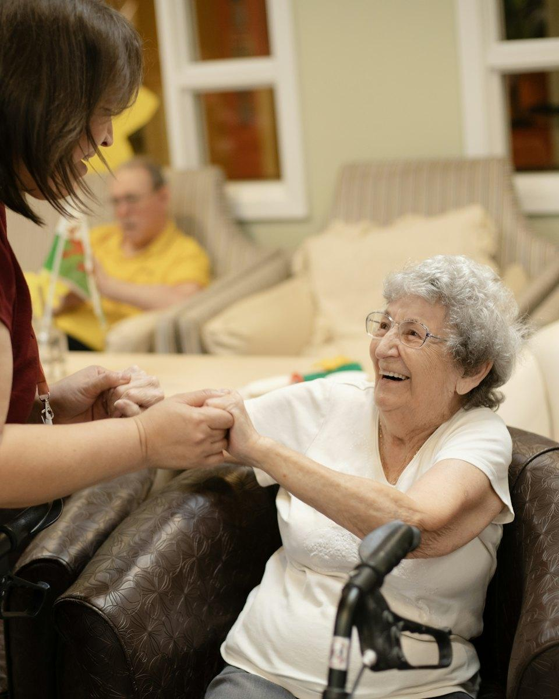
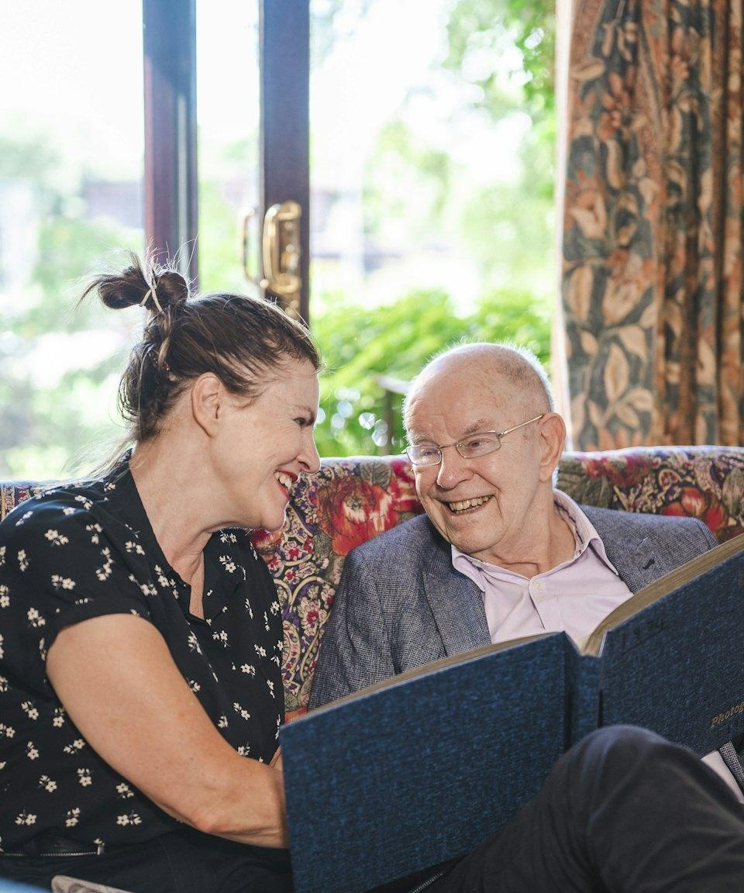
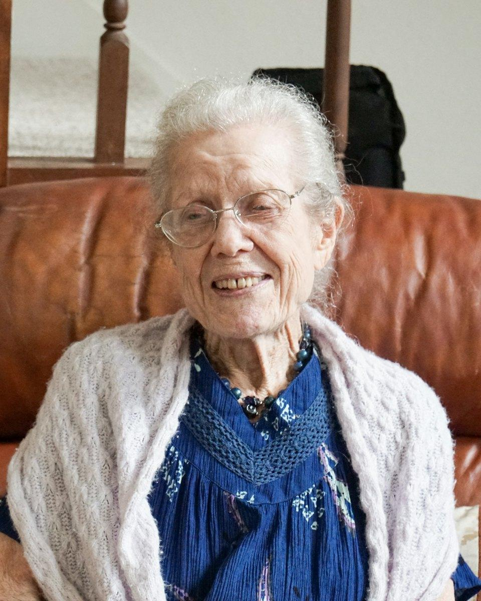
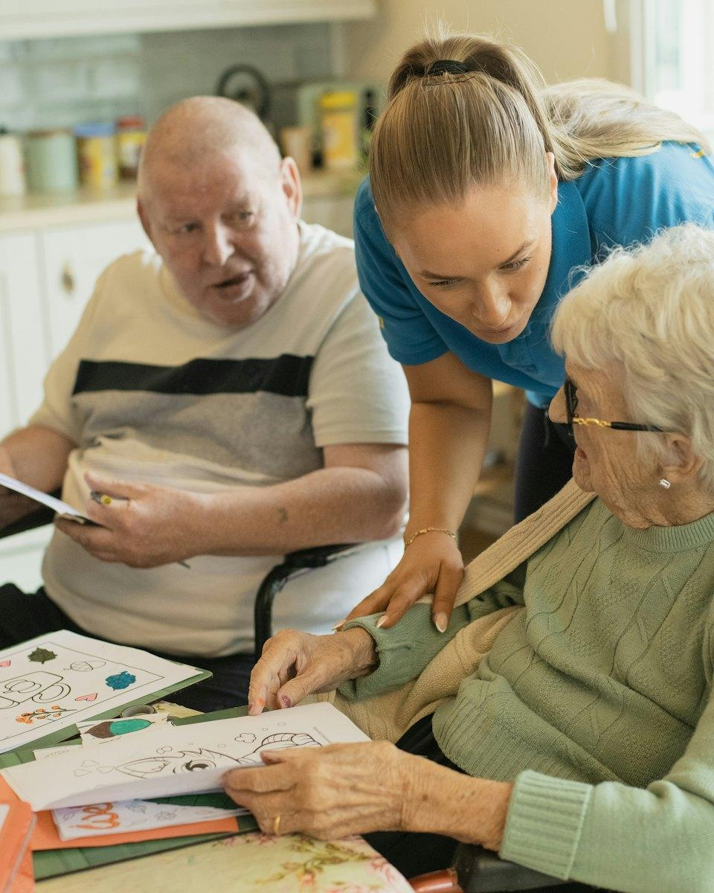
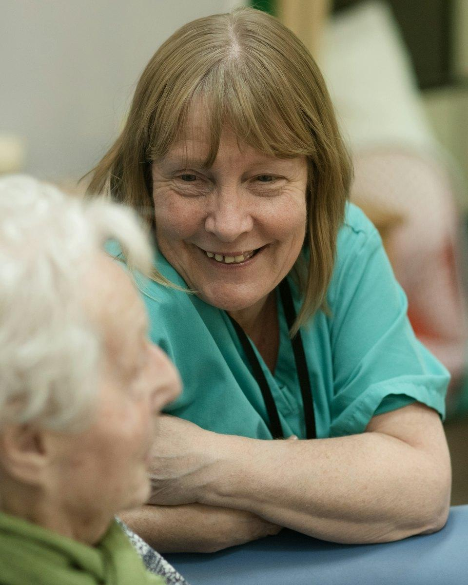
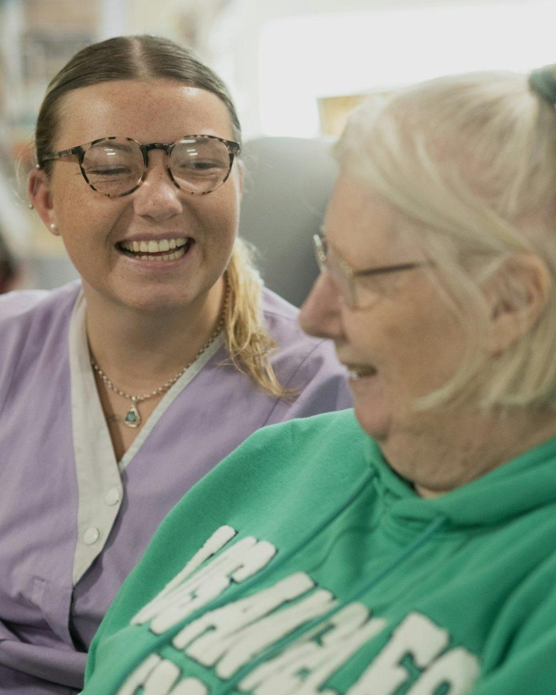
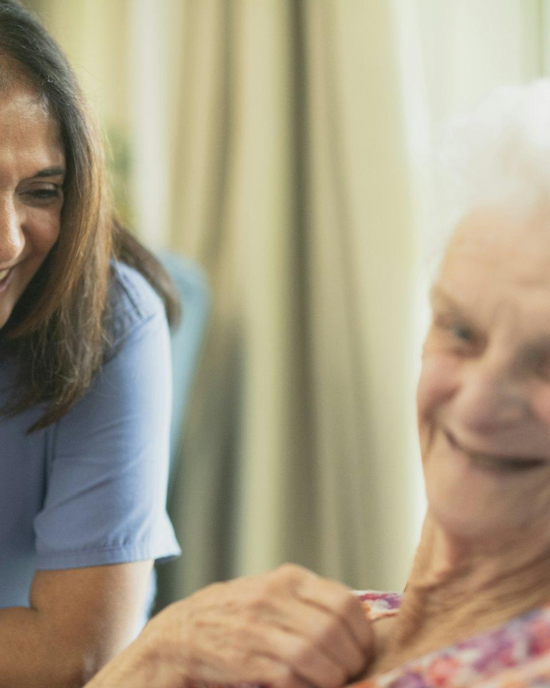
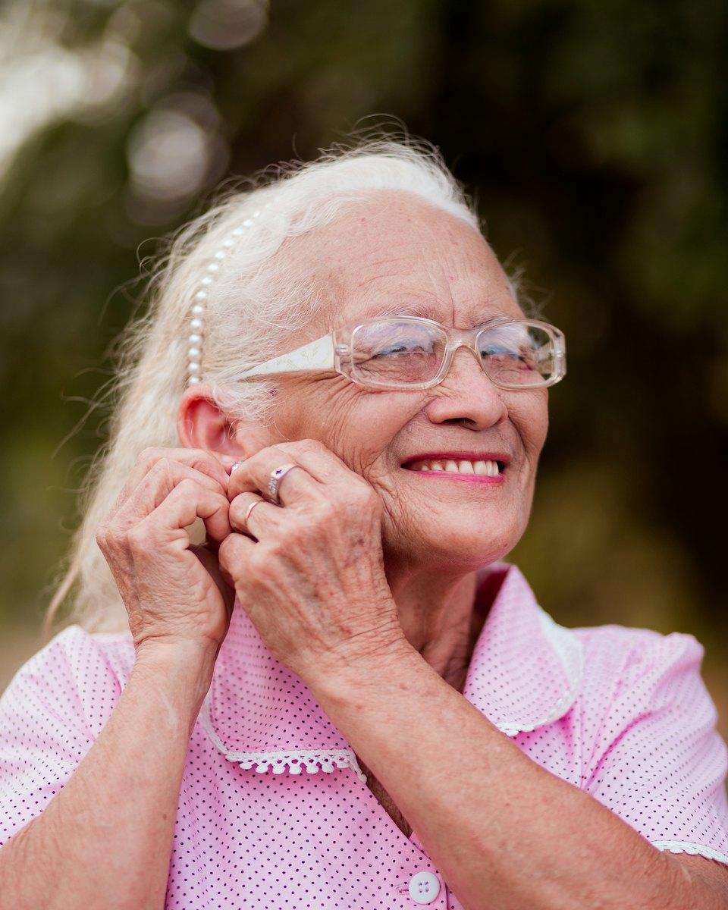

Evde Yaşlı Bakımı
Sevdikleriniz alışkın oldukları evlerinde kalırken günlük yaşamın her anında yanlarında olan deneyimli bakıcı desteği.
Detaylı bilgiİstanbul · Evde Yaşlı Bakım Hizmeti
Irmak Danışmanlık olarak yaşlı, hasta ve bakıma ihtiyaç duyan sevdiklerinize kendi evlerinde yatılı ve gündüzlü bakıcı, hasta bakımı, hastane refakatçi ve çocuk bakımı hizmeti sunuyoruz. Ücretsiz ön görüşmeyle ihtiyacınızı birlikte belirleyelim.


Hizmetlerimiz
Bakıma ihtiyaç duyan her bireyin sağlık durumu, alışkanlıkları ve beklentileri farklıdır. Bu nedenle hazır paketler yerine, ailenizle birlikte belirlediğimiz kişiye özel bir bakım planı oluşturuyoruz.

Sevdikleriniz alışkın oldukları evlerinde kalırken günlük yaşamın her anında yanlarında olan deneyimli bakıcı desteği.
Detaylı bilgi
Gece ve gündüz kesintisiz destek gerektiren durumlar için evde kalan, yakın takip sağlayan yatılı bakıcılar.
Detaylı bilgi
Siz işteyken ya da gün içinde destek gerektiğinde; saatlik, yarım gün veya tam gün esnek bakım hizmeti.
Detaylı bilgi
Yatağa bağımlı, kronik rahatsızlığı olan veya ameliyat sonrası iyileşme sürecindeki hastalar için özenli bakım.
Detaylı bilgi
Hafıza kaybı yaşayan bireylere sabırlı, güvenli ve günlük rutini koruyan; bu alanda deneyimli bakıcılarla destek.
Detaylı bilgi
Hastanede yatış sürecinde sevdiklerinizin yanında kalan, ihtiyaçlarıyla ilgilenen güvenilir refakatçiler.
Detaylı bilgiEk destek hizmetlerimiz
Ameliyat sonrası bakımEngelli bireylere destekKişisel hijyen desteğiİlaç takibiBeslenme desteğiSosyal destek ve arkadaşlıkRandevulara eşlikKısa süreli bakımÇocuk Bakımı
Bebeğiniz ve çocuklarınız için evinizde yatılı, gündüzlü veya saatlik çocuk bakıcısı yönlendiriyoruz. Çocuk bakıcılarımız da yaşlı bakımındaki aynı titiz seçim sürecinden geçer.
Bakıcı Ekibimiz
Ekibimizde Türk, Özbek ve Türkmen bakıcılar bulunur. Bir tercihiniz varsa ön görüşmede belirtmeniz yeterli. Uyruğu ne olursa olsun her bakıcımız aynı kimlik, referans ve mülakat sürecinden geçer.
Bakıcı talep edinTürk aile yapısını, mutfağını ve gündelik alışkanlıklarını yakından bilen; yaşlı, hasta ve çocuk bakımında deneyimli bakıcılar.
Yaşlı, hasta ve çocuk bakımında deneyimli, Türkçe iletişim becerisi mülakatla değerlendirilmiş Özbek bakıcılar. Yatılı ve gündüzlü çalışabilir.
Türkçeye yakın bir dil konuşan, Türkçe iletişim becerisi mülakatla değerlendirilmiş, deneyimli Türkmen bakıcılar. Yatılı ve gündüzlü çalışabilir.

“Sevdiklerinize, kendi ailemize göstereceğimiz özeni gösteriyoruz.”
Neden Biz?
Sevdiğiniz birinin bakımını başkasına emanet etmenin ne kadar zor bir karar olduğunu biliyoruz. Bu yüzden her aileyle şeffaf, ulaşılabilir ve sürekli iletişim halinde çalışıyoruz.
Kimlik, adli sicil ve referans kontrolleri yapılmış, görüşmelerle değerlendirilmiş bakıcılar.
Yaşlı ve hasta bakımında deneyimli, temel bakım konularında bilgilendirilmiş personel.
Bakıcıyı yalnızca yetkinliğe göre değil; karakter, alışkanlık ve iletişim uyumuna göre seçiyoruz.
Herhangi bir soru veya beklenmedik bir durumda bize günün her saati ulaşabilirsiniz.
Hizmet kapsamı, çalışma düzeni ve ücret baştan net şekilde, yazılı olarak belirlenir.
Uyum sağlanamazsa bakıcı değişikliği sürecini hızla ve sizin adınıza yönetiyoruz.
Nasıl Çalışıyoruz?
İlk görüşmeden bakımın başlamasına kadar tüm süreci sizin için planlıyor, bakım süresince de yanınızda olmaya devam ediyoruz.
Telefonla veya WhatsApp üzerinden bize ulaşın; ihtiyaçlarınızı dinleyip size uygun hizmet modelini anlatalım.
Bakım alacak kişinin sağlık durumunu, günlük rutinini ve evin koşullarını birlikte değerlendirelim.
Kriterlerinize uygun bakıcı adaylarını size sunuyor, tanışma görüşmesini birlikte organize ediyoruz.
Bakım başladıktan sonra sizinle düzenli iletişimde kalıyor, hizmet kalitesini sürekli takip ediyoruz.
Bakıcı Seçim Standartlarımız
Ailenizin güvenliği bizim önceliğimiz. Ekibimize katılan her bakıcı, çok aşamalı bir değerlendirme sürecinden geçer. Bakıcıyla tanışmadan ve onayınızı almadan hizmet başlamaz.
Bakıcı talep edinDoğru eşleştirme: Bakıcıyı yalnızca deneyime göre değil; karakter, alışkanlık ve iletişim uyumuna göre seçiyoruz.
Tüm bakıcılarımızın kimlik bilgileri ve güncel adli sicil kayıtları kontrol edilir.
Daha önce çalıştıkları aileler ve kurumlarla görüşülerek referansları doğrulanır.
Deneyim, iletişim becerisi, sabır ve empati düzeyi birebir görüşmelerle değerlendirilir.
Bakım hizmeti vermeye engel bir sağlık sorunu bulunmadığı belgelenir.
Kişisel bakım, hijyen, düşme önleme, ilaç takibi ve acil durumda doğru davranış konularında bilgilendirilir.
Bakım süresince aileden düzenli geri bildirim alınır, hizmet kalitesi sürekli izlenir.
Sıkça Sorulan Sorular
Evde yaşlı bakımı hakkında ailelerin bize en sık sorduğu soruları sizin için yanıtladık.
Evde yaşlı bakımı; yaşlılık, hastalık veya hareket kısıtlılığı nedeniyle günlük işlerini tek başına yapmakta zorlanan bireylerin, kendi evlerinde profesyonel bir bakıcı tarafından desteklenmesidir. Kişisel bakım, beslenme, ilaç takibi, güvenli hareket ve sosyal destek gibi ihtiyaçlar bakım alan kişinin alışık olduğu ortamda karşılanır.
Yatılı bakıcı, bakım alan kişinin evinde kalarak gece ve gündüz yakın destek sağlar. Gündüzlü bakıcı ise belirlenen saatlerde eve gelir ve mesai sonunda ayrılır. Gece desteği gerekiyorsa yatılı, yalnızca gün içinde destek gerekiyorsa gündüzlü bakım genellikle daha uygundur.
Talebinizin aciliyetine ve aradığınız kriterlere göre uygun bakıcıyı çoğu zaman kısa süre içinde yönlendirebiliyoruz. Acil durumlar için lütfen bizi doğrudan telefonla arayın.
Ücretler; hizmetin yatılı veya gündüzlü olmasına, günlük çalışma süresine, bakım alan kişinin sağlık durumuna ve bakımın gerektirdiği deneyime göre belirlenir. Ücretsiz ön görüşme sonrasında size özel, net ve yazılı bir teklif sunuyoruz.
Bakım ilişkisinde uyum çok önemlidir. Herhangi bir uyum sorunu yaşarsanız bize bildirmeniz yeterlidir; durumu değerlendiriyor ve gerekirse bakıcı değişikliği sürecini sizin adınıza hızla yönetiyoruz.
Bakıcılarımız kişisel bakım, ilaçların zamanında alınmasının takibi ve günlük yaşam desteği sağlar. Enjeksiyon, serum, pansuman gibi tıbbi uygulamalar yalnızca yetkili sağlık personeli tarafından yapılmalıdır; bu tür ihtiyaçlarda sizi doğru kaynaklara yönlendiriyoruz.
Evet. Ekibimizde Türk, Özbek ve Türkmen bakıcılar bulunur. Özbek ve Türkmen bakıcılarımızın Türkçe iletişim becerileri mülakat sürecinde değerlendirilir. Bir tercihiniz varsa ön görüşmede belirtmeniz yeterlidir.
Ücretsiz Danışmanlık
Ücretsiz ön görüşme için hemen arayın ya da WhatsApp’tan yazın. İstanbul ve çevresinde size en uygun bakım modelini birlikte belirleyelim.